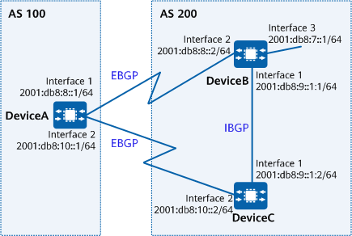

Example for Configuring BFD for BGP4+
Networking Requirements
As shown in Figure 1, DeviceA is in AS 100, and DeviceB and DeviceC are in AS 200. An EBGP connection is established between DeviceA and DeviceB, and another is established between DeviceA and DeviceC.
Service traffic is transmitted over the primary link DeviceA -> DeviceB. The backup link is DeviceA -> DeviceC -> DeviceB.
BFD is used to detect the BGP4+ peer relationship between DeviceA and DeviceB. If the primary link DeviceA -> DeviceB fails, BFD can rapidly detect the failure and report it to BGP4+, allowing service traffic to be quickly switched to the backup link.

In this example, interface 1, interface 2, and interface 3 represent 10GE0/0/1, 10GE0/0/2, and 10GE0/0/3, respectively.

To complete the configuration, you need the following data:
Router IDs and AS numbers of DeviceA, DeviceB, and DeviceC
Peer IPv6 address of BFD
Minimum interval at which BFD Control messages are sent, minimum interval at which BFD Control messages are received, and local detection multiplier
Precautions
Note the following during the configuration:
- To improve security, you are advised to deploy BGP4+ security measures. For details, see "Configuring BGP4+ Authentication." Keychain authentication is used as an example. For details, see Example for Configuring Keychain Authentication for BGP4+.
Configuration Roadmap
The configuration roadmap is as follows:
Configure basic BGP4+ functions on each device.
Configure the MED attribute on DeviceB and DeviceC to control route selection, allowing traffic to be transmitted over the primary link DeviceA -> DeviceB.
Enable BFD on DeviceA and DeviceB.
Procedure
- Assign an IPv6 address to each interface involved. For detailed configurations, see Configuration Scripts.
- Configure basic BGP4+ functions, establish an EBGP connection between DeviceA and DeviceB and another between DeviceA and DeviceC, and establish an IBGP connection between DeviceB and DeviceC.
# Configure DeviceA.
[DeviceA] bgp 100 [DeviceA-bgp] router-id 1.1.1.1 [DeviceA-bgp] peer 2001:db8:8::2 as-number 200 [DeviceA-bgp] peer 2001:db8:10::2 as-number 200 [DeviceA-bgp] ipv6-family unicast [DeviceA-bgp-af-ipv6] peer 2001:db8:8::2 enable [DeviceA-bgp-af-ipv6] peer 2001:db8:10::2 enable [DeviceA-bgp-af-ipv6] quit [DeviceA-bgp] quit
# Configure DeviceB.
[DeviceB] bgp 200 [DeviceB-bgp] router-id 2.2.2.2 [DeviceB-bgp] peer 2001:db8:8::1 as-number 100 [DeviceB-bgp] peer 2001:db8:9::1:2 as-number 200 [DeviceB-bgp] ipv6-family unicast [DeviceB-bgp-af-ipv6] peer 2001:db8:8::1 enable [DeviceB-bgp-af-ipv6] peer 2001:db8:9::1:2 enable [DeviceB-bgp-af-ipv6] network 2001:db8:7::1 64 [DeviceB-bgp-af-ipv6] quit [DeviceB-bgp] quit
# Configure DeviceC.
[DeviceC] bgp 200 [DeviceC-bgp] router-id 3.3.3.3 [DeviceC-bgp] peer 2001:db8:10::1 as-number 100 [DeviceC-bgp] peer 2001:db8:9::1:1 as-number 200 [DeviceC-bgp] ipv6-family unicast [DeviceC-bgp-af-ipv6] peer 2001:db8:10::1 enable [DeviceC-bgp-af-ipv6] peer 2001:db8:9::1:1 enable [DeviceC-bgp-af-ipv6] quit [DeviceC-bgp] quit
# On DeviceA, check whether the BGP4+ peer relationship is in the Established state.
[DeviceA] display bgp ipv6 peer BGP local router ID : 1.1.1.1 Local AS number : 100 Total number of peers : 2 Peers in established state : 2 Peer V AS MsgRcvd MsgSent OutQ Up/Down State PrefRcv 2001:DB8:8::2 4 200 12 11 0 00:07:26 Established 0 2001:DB8:10::2 4 200 12 12 0 00:07:21 Established 0
- Configure BFD to detect the BGP peer relationship between DeviceA and DeviceB.
# Enable BFD on DeviceA and configure a BFD session to detect the link between DeviceA and DeviceB.
[DeviceA] bfd [DeviceA-bfd] quit
# Enable BFD on DeviceB and configure a BFD session to detect the link between DeviceB and DeviceA.
[DeviceB] bfd [DeviceB-bfd] quit
- Configure the MED attribute.
Configure a route-policy to set the MED attribute for the routes that DeviceB and DeviceC send to DeviceA.
# Configure DeviceB.
[DeviceB] route-policy 10 permit node 10 [DeviceB-route-policy] apply cost 100 [DeviceB-route-policy] quit [DeviceB] bgp 200 [DeviceB-bgp] ipv6-family unicast [DeviceB-bgp-af-ipv6] peer 2001:db8:8::1 route-policy 10 export [DeviceB-bgp-af-ipv6] quit [DeviceB-bgp] quit
# Configure DeviceC.
[DeviceC] route-policy 10 permit node 10 [DeviceC-route-policy] apply cost 150 [DeviceC-route-policy] quit [DeviceC] bgp 200 [DeviceC-bgp] ipv6-family unicast [DeviceC-bgp-af-ipv6] peer 2001:db8:10::1 route-policy 10 export [DeviceC-bgp-af-ipv6] quit [DeviceC-bgp] quit
# Check the BGP4+ routing table of DeviceA.
[DeviceA] display bgp ipv6 routing-table BGP Local router ID is 1.1.1.1 Status codes: * - valid, > - best, d - damped, x - best external, a - add path, h - history, i - internal, s - suppressed, S - Stale Origin : i - IGP, e - EGP, ? - incomplete RPKI validation codes: V - valid, I - invalid, N - not-found Total Number of Routes: 2 *> Network : 2001:DB8:7:: PrefixLen : 64 NextHop : 2001:DB8:8::2 LocPrf : MED : 100 PrefVal : 0 Label : Path/Ogn : 200 i * NextHop : 2001:DB8:10::2 LocPrf : MED : 150 PrefVal : 0 Label : Path/Ogn : 200 i
The preceding command output shows that the next hop of the BGP4+ route destined for 2001:db8:7::1/64 is 2001:db8:8::2 and that traffic is transmitted over the primary link DeviceA -> DeviceB.
- Configure BFD, and set the intervals at which BFD Control messages are sent and received as well as the local detection multiplier.
# Enable BFD on DeviceA, set the minimum intervals at which BFD Control messages are sent and received to 100 ms, and set the local detection multiplier to 4.
[DeviceA] bfd [DeviceA-bfd] quit [DeviceA] bgp 100 [DeviceA-bgp] peer 2001:db8:8::2 bfd enable [DeviceA-bgp] peer 2001:db8:8::2 bfd min-tx-interval 100 min-rx-interval 100 detect-multiplier 4 [DeviceA-bgp] quit
# Enable BFD on DeviceB, set the minimum intervals at which BFD Control messages are sent and received to 100 ms, and set the local detection multiplier to 4.
[DeviceB] bfd [DeviceB-bfd] quit [DeviceB] bgp 200 [DeviceB-bgp] peer 2001:db8:8::1 bfd enable [DeviceB-bgp] peer 2001:db8:8::1 bfd min-tx-interval 100 min-rx-interval 100 detect-multiplier 4 [DeviceB-bgp] quit
# Check all BFD sessions established by BGP4+ on DeviceA.
[DeviceA] display bgp ipv6 bfd session all -------------------------------------------------------------------------------- Local_Address : 2001:DB8:8::1 Peer_Address : 2001:DB8:8::2 Tx-interval(ms): 100 Rx-interval(ms): 100 Multiplier : 4 Interface : 10GE0/0/1 Session-State : Up FRR-flag : disable --------------------------------------------------------------------------------
Verifying the Configuration
# Run the shutdown command on DeviceB's 10GE 0/0/2 to simulate a failure on the primary link.
[DeviceB] interface 10GE 0/0/2 [DeviceB-10GE0/0/2] shutdown [DeviceB-10GE0/0/2] quit
# Check the BGP4+ routing table of DeviceA.
[DeviceA] display bgp ipv6 routing-table Total Number of Routes: 1 BGP Local router ID is 1.1.1.1 Status codes: * - valid, > - best, d - damped, x - best external, a - add path, h - history, i - internal, s - suppressed, S - Stale Origin : i - IGP, e - EGP, ? - incomplete RPKI validation codes: V - valid, I - invalid, N - not-found *> Network : 2001:DB8:7:: PrefixLen : 64 NextHop : 2001:DB8:10::2 LocPrf : MED : 150 PrefVal : 0 Label : Path/Ogn : 200 i
The preceding command output shows that the next hop of the BGP4+ route destined for 2001:db8:7::1/64 is 2001:db8:10::2 and the backup link DeviceA -> DeviceC -> DeviceB takes effect after the primary link fails.
Configuration Scripts
DeviceA
# sysname DeviceA # bfd # interface 10GE0/0/1 ipv6 enable ipv6 address 2001:DB8:8::1/64 # interface 10GE0/0/2 ipv6 enable ipv6 address 2001:DB8:10::1/64 # interface LoopBack0 ip address 1.1.1.1 255.255.255.255 # bgp 100 router-id 1.1.1.1 peer 2001:DB8:8::2 as-number 200 peer 2001:DB8:8::2 bfd min-tx-interval 100 min-rx-interval 100 detect-multiplier 4 peer 2001:DB8:8::2 bfd enable peer 2001:DB8:10::2 as-number 200 # ipv4-family unicast # ipv6-family unicast peer 2001:DB8:8::2 enable peer 2001:DB8:10::2 enable # return
DeviceB
# sysname DeviceB # bfd # interface 10GE0/0/1 ipv6 enable ipv6 address 2001:DB8:9::1:1/64 # interface 10GE0/0/2 ipv6 enable ipv6 address 2001:DB8:8::2/64 # interface 10GE0/0/3 ipv6 enable ipv6 address 2001:DB8:7::1/64 # interface LoopBack0 ip address 2.2.2.2 255.255.255.255 # bgp 200 router-id 2.2.2.2 peer 2001:DB8:8::1 as-number 100 peer 2001:DB8:8::1 bfd min-tx-interval 100 min-rx-interval 100 detect-multiplier 4 peer 2001:DB8:8::1 bfd enable peer 2001:DB8:9::1:2 as-number 200 # ipv4-family unicast # ipv6-family unicast network 2001:db8:7:: 64 peer 2001:DB8:8::1 enable peer 2001:DB8:8::1 route-policy 10 export peer 2001:DB8:9::1:2 enable # route-policy 10 permit node 10 apply cost 100 # return
DeviceC
# sysname DeviceC # interface 10GE0/0/1 ipv6 enable ipv6 address 2001:DB8:9::1:2/64 # interface 10GE0/0/2 ipv6 enable ipv6 address 2001:DB8:10::2/64 # interface LoopBack0 ip address 3.3.3.3 255.255.255.255 # bgp 200 router-id 3.3.3.3 peer 2001:DB8:9::1:1 as-number 200 peer 2001:DB8:10::1 as-number 100 # ipv4-family unicast # ipv6-family unicast undo synchronization peer 2001:DB8:9::1:1 enable peer 2001:DB8:10::1 enable peer 2001:DB8:10::1 route-policy 10 export # route-policy 10 permit node 10 apply cost 150 # return